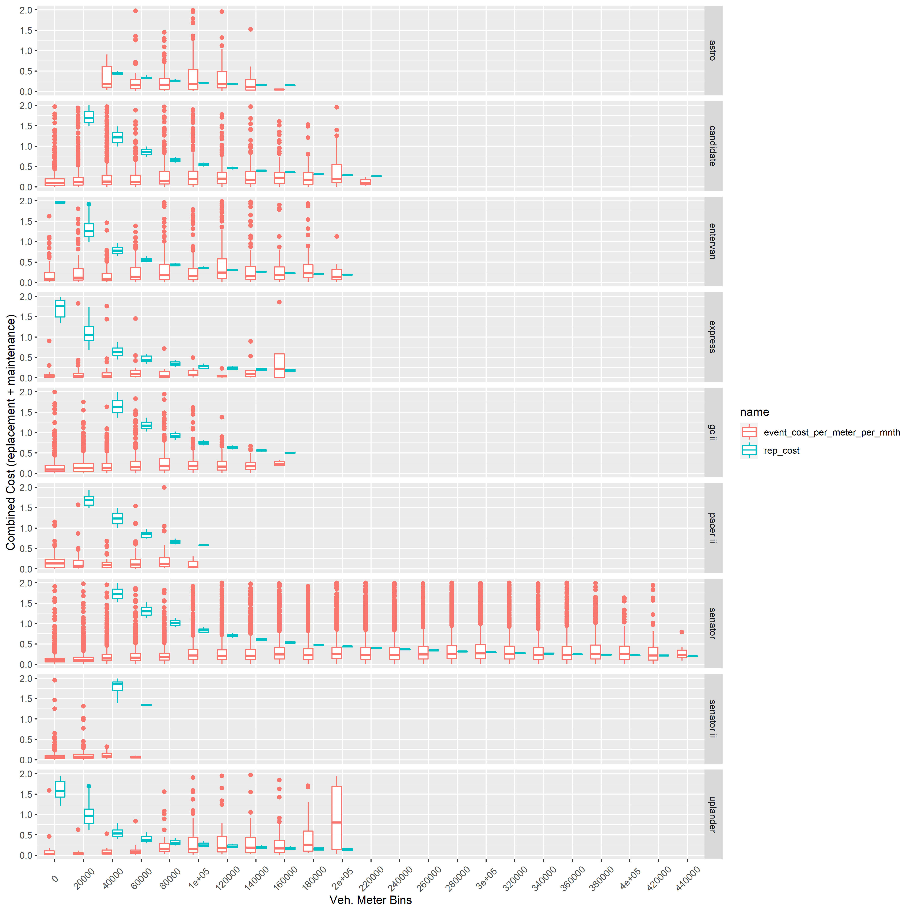
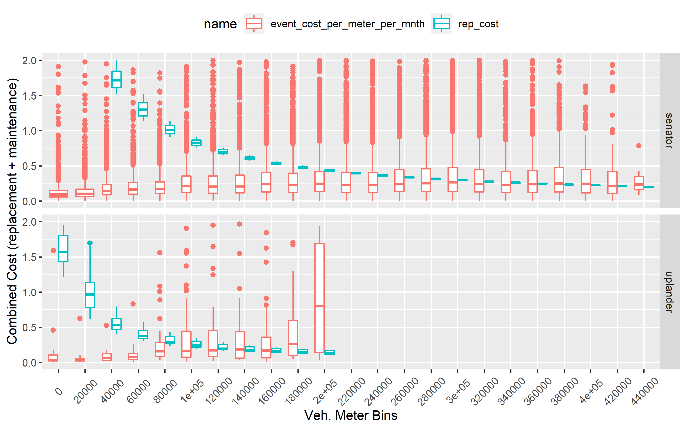

Last updated: 2021-05-06
Checks: 7 0
Knit directory: KCM_ULB_Analysis/
This reproducible R Markdown analysis was created with workflowr (version 1.6.2). The Checks tab describes the reproducibility checks that were applied when the results were created. The Past versions tab lists the development history.
Great! Since the R Markdown file has been committed to the Git repository, you know the exact version of the code that produced these results.
Great job! The global environment was empty. Objects defined in the global environment can affect the analysis in your R Markdown file in unknown ways. For reproduciblity it’s best to always run the code in an empty environment.
The command set.seed(20210318) was run prior to running the code in the R Markdown file. Setting a seed ensures that any results that rely on randomness, e.g. subsampling or permutations, are reproducible.
Great job! Recording the operating system, R version, and package versions is critical for reproducibility.
Nice! There were no cached chunks for this analysis, so you can be confident that you successfully produced the results during this run.
Great job! Using relative paths to the files within your workflowr project makes it easier to run your code on other machines.
Great! You are using Git for version control. Tracking code development and connecting the code version to the results is critical for reproducibility.
The results in this page were generated with repository version fdc9b6e. See the Past versions tab to see a history of the changes made to the R Markdown and HTML files.
Note that you need to be careful to ensure that all relevant files for the analysis have been committed to Git prior to generating the results (you can use wflow_publish or wflow_git_commit). workflowr only checks the R Markdown file, but you know if there are other scripts or data files that it depends on. Below is the status of the Git repository when the results were generated:
Ignored files:
Ignored: .Rhistory
Ignored: .Rproj.user/
Ignored: code/.Rhistory
Untracked files:
Untracked: KCM_ULB_Analysis.Rproj
Untracked: analysis/spurious_data.Rmd
Untracked: code/data_analysis.R
Untracked: code/data_import.R
Untracked: code/general_development.R
Untracked: code/utils_helpers_general.R
Untracked: code/utils_script_specific.R
Untracked: code/zz_emptyScriptTemplate.R
Untracked: code/zz_emptyScriptTemplate_CODE.R
Untracked: code/zz_emptyScriptTemplate_UTILS.R
Untracked: code/zz_localG.R
Unstaged changes:
Deleted: KCM_ULB_Anlysis.Rproj
Modified: analysis/_site.yml
Modified: analysis/combined_cost_analysis_20210503.Rmd
Modified: analysis/index.Rmd
Note that any generated files, e.g. HTML, png, CSS, etc., are not included in this status report because it is ok for generated content to have uncommitted changes.
These are the previous versions of the repository in which changes were made to the R Markdown (analysis/combined_cost_analysis_20210426.Rmd) and HTML (docs/combined_cost_analysis_20210426.html) files. If you’ve configured a remote Git repository (see ?wflow_git_remote), click on the hyperlinks in the table below to view the files as they were in that past version.
| File | Version | Author | Date | Message |
|---|---|---|---|---|
| html | fdc9b6e | michaelgaunt404 | 2021-05-05 | Build site. |
| Rmd | e5a7e44 | michaelgaunt404 | 2021-05-05 | wflow_publish(c(“./analysis/combined_cost_analysis_20210503.rmd”, |
This analysis attempts to determine the most cost efficient time to remove a vehicle from the KCM fleet given vehicle type and maintenance costs.
The data used for this analysis consists of the KCM work order data used in the previous maintenance cost analysis and vehicle cost data as supplied by NR. The vehicle cost data was imperfect data and retired some cleaning such that it could be combined with he maintenance cost data set. The vehicle cost data can be seen below:
This table was joined with the KCM work order data, the join was performed on vehicle model type. The table below details unique vehicle types and their average and median replacement costs resulting from the inner join:
This analysis generally follows the same process as the previous analysis - replacement and operational costs were aggregated (average/median) per meter bin per unique model type. Those two metrics were superimposed to determine if there is a consistent point in a vehicle’s life when it becomes too expensive to maintain, i.e. maintenance costs overcome replacement costs.
The maintenance and replacement costs given meter mileage for a number of vehicle types can be seen in the plot below.
Key takeaways:

This plot highlights the costs associated for the Senator vehicle type: 
This was a quick analysis that was performed without fully cleaning the vehicle cost data set. This may have resulted in some vehicle types being unintentionally excluded form this analysis. The FA033 data set provided a list of vehicle types that was used to check if the the inner join data was missing any vehicle types that should have been included in this analysis. It appears all of the vehicle types designated as a transit asset type in the FA033 data set was properly captured by the inner join operation, some of these items were: Dodge Grand Caravans, Uplander, and the Senator.
R version 3.6.2 (2019-12-12)
Platform: x86_64-w64-mingw32/x64 (64-bit)
Running under: Windows 10 x64 (build 17134)
Matrix products: default
locale:
[1] LC_COLLATE=English_United States.1252
[2] LC_CTYPE=English_United States.1252
[3] LC_MONETARY=English_United States.1252
[4] LC_NUMERIC=C
[5] LC_TIME=English_United States.1252
attached base packages:
[1] stats graphics grDevices utils datasets methods base
other attached packages:
[1] ggridges_0.5.3 here_1.0.1 data.validator_0.1.5
[4] skimr_2.1.2 DT_0.17 lubridate_1.7.9.2
[7] data.table_1.13.2 janitor_2.1.0 readxl_1.3.1
[10] magrittr_2.0.1 forcats_0.5.1 stringr_1.4.0
[13] dplyr_1.0.4 purrr_0.3.4 readr_1.4.0
[16] tidyr_1.1.3 tibble_3.1.0 ggplot2_3.3.3
[19] tidyverse_1.3.0 workflowr_1.6.2
loaded via a namespace (and not attached):
[1] httr_1.4.2 sass_0.3.1 jsonlite_1.7.2 modelr_0.1.8
[5] bslib_0.2.4 assertthat_0.2.1 highr_0.8 cellranger_1.1.0
[9] yaml_2.2.1 pillar_1.6.0 backports_1.2.1 glue_1.4.2
[13] digest_0.6.27 promises_1.1.1 rvest_0.3.6 snakecase_0.11.0
[17] colorspace_2.0-0 htmltools_0.5.1.1 httpuv_1.5.4 plyr_1.8.6
[21] pkgconfig_2.0.3 broom_0.7.5 haven_2.3.1 scales_1.1.1
[25] whisker_0.4 later_1.1.0.1 git2r_0.28.0 farver_2.0.3
[29] generics_0.1.0 ellipsis_0.3.1 withr_2.4.1 repr_1.1.3
[33] cli_2.3.1 crayon_1.4.1 evaluate_0.14 ps_1.3.2
[37] fs_1.5.0 fansi_0.4.2 xml2_1.3.2 tools_3.6.2
[41] hms_1.0.0 lifecycle_1.0.0 munsell_0.5.0 reprex_1.0.0
[45] compiler_3.6.2 jquerylib_0.1.3 rlang_0.4.10 grid_3.6.2
[49] rstudioapi_0.13 htmlwidgets_1.5.3 crosstalk_1.1.1 base64enc_0.1-3
[53] labeling_0.4.2 rmarkdown_2.7 gtable_0.3.0 DBI_1.1.1
[57] R6_2.5.0 knitr_1.31 utf8_1.1.4 rprojroot_2.0.2
[61] stringi_1.5.3 Rcpp_1.0.6 vctrs_0.3.6 dbplyr_2.1.0
[65] tidyselect_1.1.0 xfun_0.19